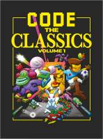

Esta página contiene enlaces a los números publicados de la revista Wireframe Books en 2020 - 2019.
Página web: Libros Revista Wireframe
Número 2 - 2020 enero
Descarga (PDF 10.9 MB, inglés)

Número 1 - 2019 diciembre
Descarga (PDF 37.0 MB, inglés)